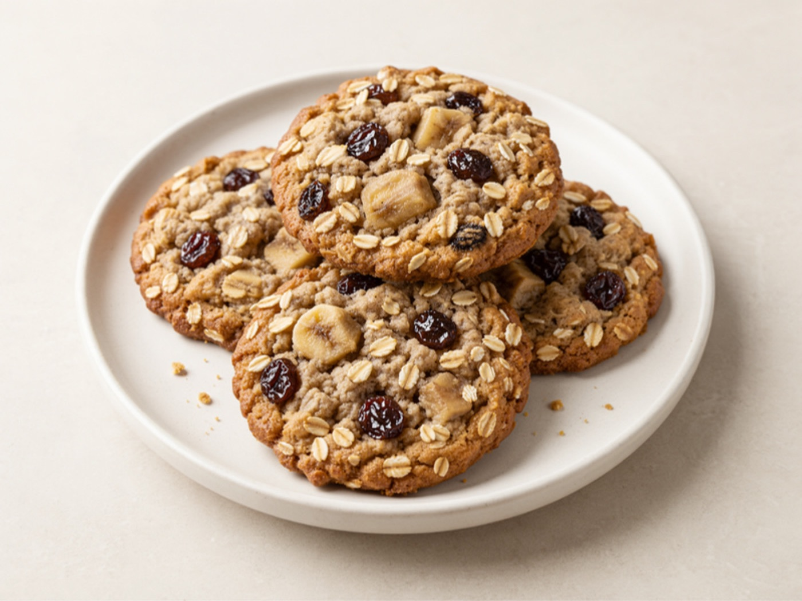

Перекуси · № 071
Вівсяне печиво
25 хвчас
16штук
7інгредієнтів
КБЖВ · ПП-версіяна 1 шт.
74ккал
2 гбілки
1 гжири
13 гвуглеводи
Класична версія: 135 ккал · Ж 6 г → тут на 45% менше калорій
Уся страва · 545 г продуктів1176 ккал · Б 36 г · Ж 19 г · В 212 г
На 100 г: 216 ккал · Б 7 · Ж 4 · В 39.
Повний рецепт — за підпискою
Інгредієнти з точними грамовками й покрокове приготування страви «Вівсяне печиво» доступні в платному Telegram-каналі Артема Трачука. Підписка відкриває всі 100 ПП-рецептів.
- 7 інгредієнтів з точними грамовками
- 4 кроки приготування
- КБЖВ і нові рецепти щотижня
Вже підписані? Увійдіть через Telegram, і рецепт відкриється тут.
Безкоштовно: по 2 рецепти з кожного розділу — шукайте їх без позначки 🔒.